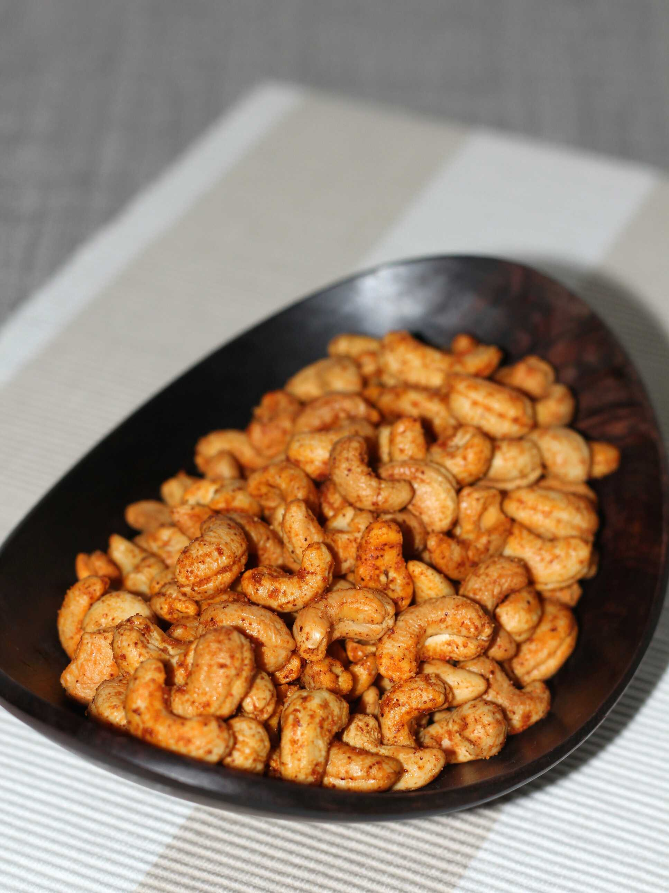

<h1>Roasted Cashews</h1>
<p></p>
<h2>Description</h2>
    <p>Die Cashews in die erhitzte Pfanne geben</p>
<h2>Ingredients</h2>
    <ul>
        <li>150 g Cashew</li>
        <li>4 EL Hefeflocken</li>
        <li>1 TL Meersalz</li>
        <li>1/2 TL Knoblauchpulver</li>
    </ul>
<h2>Steps</h2>
    <ol>
        <li>Nüsse in Mixer</li>
        <li>Mixen</li>
        <li>Essen</li>
    </ol>